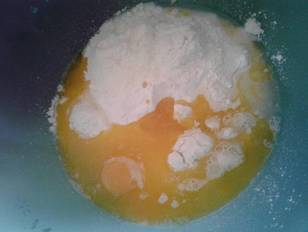
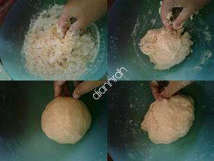
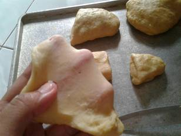
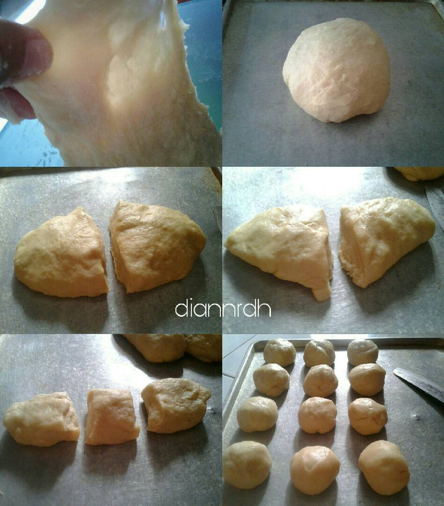
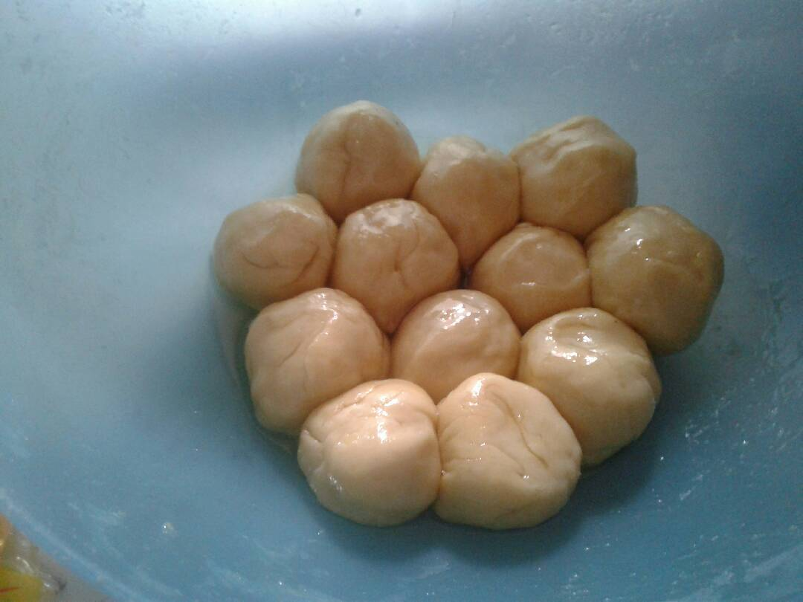
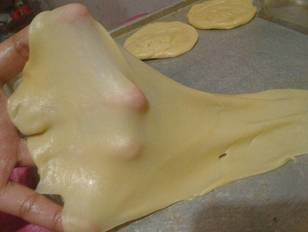
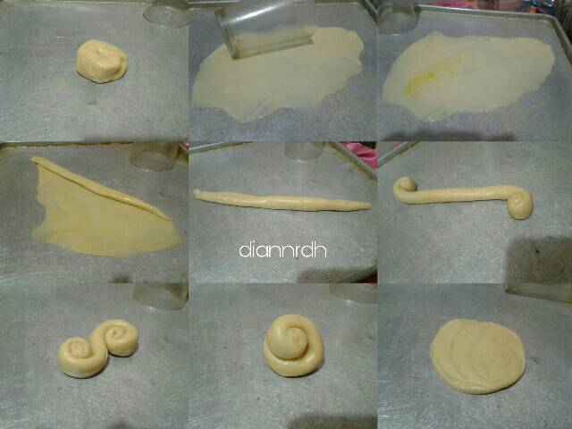
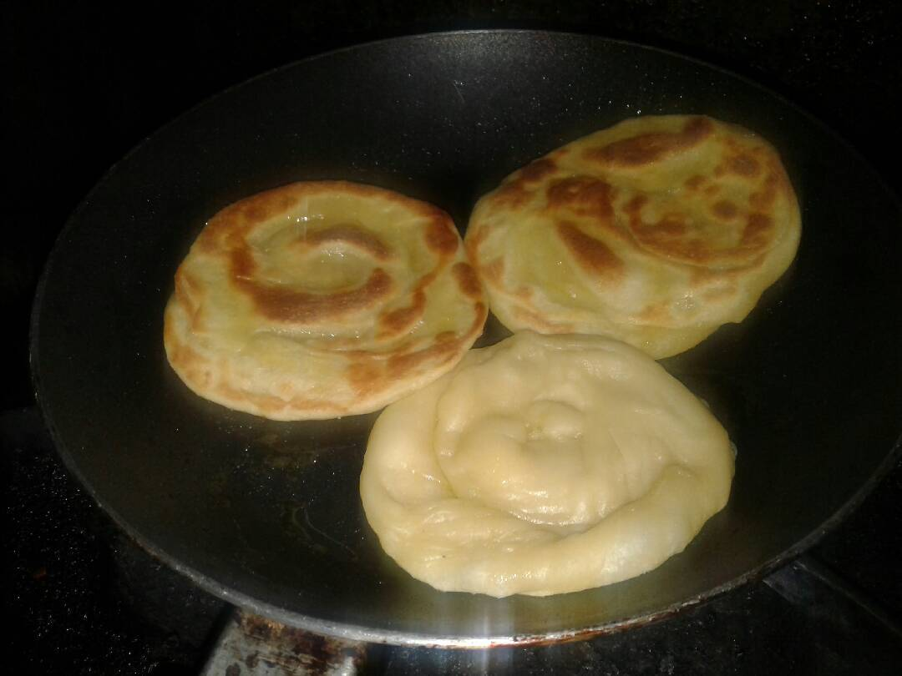
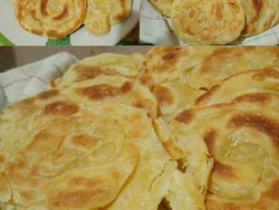

Resep Kue Maryam
Bahan-bahan:

- 250 gr tepung
- 1 butir telur
- 3 sdm margarin, lelehkan
- 100 ml air hangat
- 2 sdm susu bubuk(optional)
- 1/2 sdt garam
- margarin leleh untuk olesan
- minyak untuk merendam
|
Langka-langkah
1.Campur semua bahan roti

|
2.Uleni sampai kalis (aku pake tangan) jangan takut jika adonan lengket ya,
lumuri tangan sesekali dg tepung (tapi jangan menambahkan tepung)
uleni terus sampai adonan kalis.

|
3.Kalisnya adonan canai tidak sekalis adonan roti ya, kira2 seperti ini sudah cukup.

|
4.Bagi adonan menjadi 12 bagian. Kalau mau lebih besar bagi jadi 10 bagian.

|
5. Lumuri/rendam adonan dengan minyak goreng (supaya adonan tidak kering) diamkan 1-3 jam (boleh semalaman asal ditutup serbet)

|
6. Setelah di rendam minyak, adonan akan lebih lentur dan kalis daripada sebelumnya.

|
7.Ambil 1 adonan. Pipihkan melebar setipis mungkin. Olesi dengan margarin cair.
Gulung memanjang. Linting berlawanan arah spt konde. Tumpuk kedua bagian,
terakhir pipihkan lagi.

|
8.Panaskan teflon dengan api kecil aja. Panggang adonan dengan sekali balik,
tekan-tekan supaya matangnya rata. Kalau mau dikasih butter akan lebih gurih canainya

|
9.Canai siap disajikan, dengan kuah kari atau topping messes, keju serta SKM juga enak

|